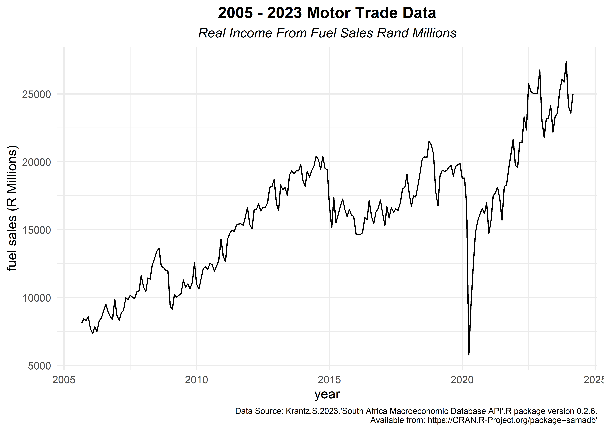
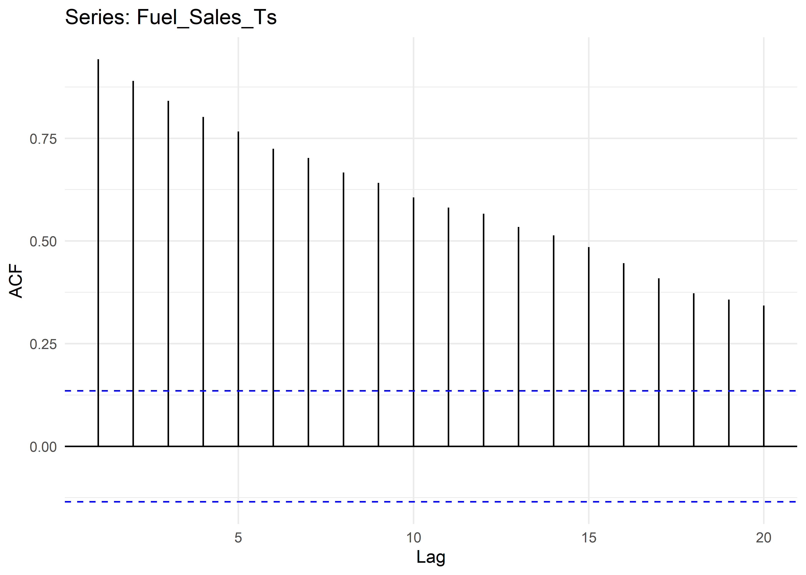
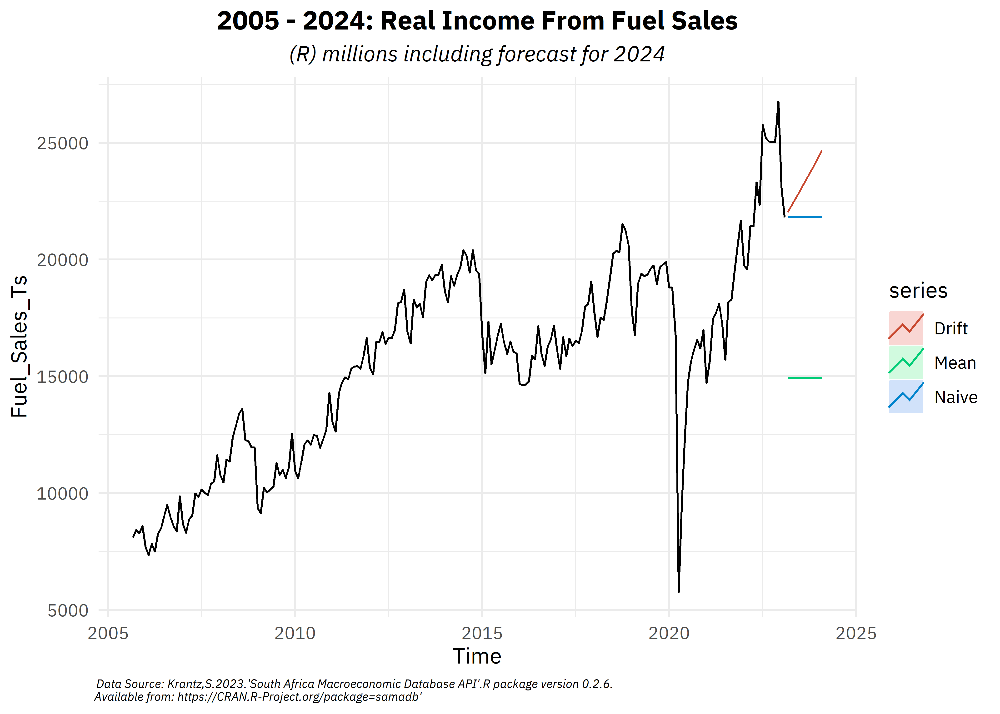

see code
[[1]]
[1] TRUE
[[2]]
[1] TRUE
[[3]]
[1] TRUE
[[4]]
[1] TRUE
[[5]]
[1] TRUE
[[6]]
[1] TRUE
[[7]]
[1] TRUE
[[8]]
[1] TRUESivuyile Nzimeni
21 June 2023
CRAN Task Views contain important updates on packages, databases and other developments in the R community. Among the packages listed in the Time Series task view is the SAMADB R packages maintained by the Department of Economics at Stellenbosch University. The packages relies on EconData for weekly updates on South African macroeconomic data from Statistics South Africa(StatsSA) and the South African Reserve Bank (SARB).
StatsSA and SARB are among a few governmental organisations that regularly publish data. Data collection can be a bit combersome since the data are often published in xlsx, csv or an exotic formats. In addition, the data often has multiple versions, to include, more recent data.Effectively, the package streamlines the data access via standardising,versioning and storing the data from the above mentioned institutions.
[[1]]
[1] TRUE
[[2]]
[1] TRUE
[[3]]
[1] TRUE
[[4]]
[1] TRUE
[[5]]
[1] TRUE
[[6]]
[1] TRUE
[[7]]
[1] TRUE
[[8]]
[1] TRUEThe table below provides an interactive table of all the datasets available from the package. The table is derived from the sm_datasets() function, which returns a data.table object containing important such as the dataset id, the full name of the data, frequency of publication along with the number of records and series available.
SAMADB_Datasets
In our walk-through, we rely on the Motor Trade sales from Statistics South Africa. The data ranges from 1998-01-01 - 2023-02-01, collected monthly. Below, we illustrade how to a straight-forward way of collecting the data from the EconData database. We specify the dsid listed in table above. Thereafter, replace variable names with their labels.
Many statistical analysis packages (SPSS,SAS and Stata etc.) utilise labels in their data analysis. This affords researchers the opportunity to encapsulate assign text labels with the associated values. In R it possible to make use of labelled vectors or factors without losing meaningful information.
Motor_Trade <- sm_data(dsid="MOTOR_TRADE")|>data.frame()
Variable_Labels <- labelled::var_label(Motor_Trade)
NULL -> names(Variable_Labels)
Variable_Labels <- unlist(Variable_Labels)
Variable_Labels <- ifelse(is.na(Variable_Labels),"Date",Variable_Labels)
names(Motor_Trade) <- Variable_Labels
Motor_Trade <- Motor_Trade |>
clean_names() |>
labelled::remove_var_label()With the data in hand, we can explore the dataset further, such as obtaining an overview of completeness(or lack thereof) of the dataset. Here, we rely on the skimr package to fulfil this task.
| Name | Motor_Trade |
| Number of rows | 310 |
| Number of columns | 9 |
| _______________________ | |
| Column type frequency: | |
| Date | 1 |
| numeric | 8 |
| ________________________ | |
| Group variables | None |
Variable type: Date
| skim_variable | n_missing | complete_rate | min | max | median | n_unique |
|---|---|---|---|---|---|---|
| date | 0 | 1 | 1998-01-01 | 2023-10-01 | 2010-11-16 | 310 |
Variable type: numeric
| skim_variable | n_missing | complete_rate | mean | sd | p0 | p25 | p50 | p75 | p100 | hist |
|---|---|---|---|---|---|---|---|---|---|---|
| real_income_from_the_sales_of_accessories_rand_millions | 92 | 0.7 | 9767.09 | 3195.68 | 1902 | 7129.25 | 9755.5 | 12266.25 | 16837 | ▂▆▆▇▂ |
| real_income_from_convenient_store_sales_rand_millions | 92 | 0.7 | 1390.20 | 211.71 | 691 | 1230.00 | 1410.5 | 1556.00 | 1898 | ▁▃▇▇▂ |
| real_total_rand_millions | 0 | 1.0 | 41643.82 | 19487.44 | 10024 | 25020.00 | 40513.0 | 57324.25 | 81889 | ▇▆▅▇▂ |
| real_total_rand_millions_seasonally_adjusted | 0 | 1.0 | 41634.81 | 19367.23 | 9748 | 24868.50 | 40068.0 | 57243.75 | 79502 | ▆▅▃▇▂ |
| real_income_from_fuel_sales_rand_millions | 92 | 0.7 | 15877.32 | 4457.73 | 5773 | 12272.75 | 16452.0 | 19057.25 | 26770 | ▂▃▇▅▂ |
| real_new_vehicle_sales_rand_millions | 92 | 0.7 | 12840.82 | 2998.19 | 1041 | 10810.25 | 13276.5 | 14599.00 | 19841 | ▁▁▅▇▂ |
| real_used_vehicle_sales_rand_millions | 92 | 0.7 | 9398.44 | 2768.20 | 326 | 6951.00 | 9057.5 | 11504.75 | 15473 | ▁▂▇▆▃ |
| real_workshop_income_rand_millions | 92 | 0.7 | 2511.17 | 468.16 | 505 | 2131.50 | 2575.0 | 2876.25 | 3605 | ▁▁▆▇▂ |
2023 Motor Trade Overview
The dataset contains some missing data from 1998-01-01 to 2005-08-01. Fortunately, there is a pattern in the missing values. Data was not collect for variables listed. From 2005-09-01 onward, StatsSA started collecting more detailed information about motor trade sector.
Motor_Trade |>
ggplot(aes(date,real_income_from_fuel_sales_rand_millions))+
geom_line()+
labs(title = "2005 - 2023 Motor Trade Data",
subtitle = "Real Income From Fuel Sales Rand Millions",
y= "fuel sales (R Millions)",
x = "year",
caption = "Data Source: Krantz,S.2023.'South Africa Macroeconomic Database API'.R package version 0.2.6.\nAvailable from: https://CRAN.R-Project.org/package=samadb'")+
theme(text = element_text(family = "IBM Plex Sans"),
plot.title = element_text(face = "bold",hjust =0.5),
plot.subtitle = element_text(face = "italic",hjust=0.5),
plot.caption = element_text(size =7))

autoplot(Fuel_Sales_Ts)+
autolayer(meanf(Fuel_Sales_Ts,lambda = 0,h=12),series = "Mean", PI=F)+
autolayer(rwf(Fuel_Sales_Ts,h=12,lambda =0),series= "Naive",PI=F)+
autolayer(rwf(Fuel_Sales_Ts,h=12,lambda = 0,drift=T,biasadj = T),series="Drift",PI=F)+
ggtitle(label = "2005 - 2024: Real Income From Fuel Sales",
subtitle = "(R) millions including forecast for 2024")+
labs(caption = "Data Source: Krantz,S.2023.'South Africa Macroeconomic Database API'.R package version 0.2.6.\nAvailable from: https://CRAN.R-Project.org/package=samadb'")+
theme(text = element_text("IBM Plex Sans"),
plot.title = element_text(face = "bold",hjust=0.5),
plot.subtitle = element_text(face = "italic",hjust=0.5),
plot.caption = element_text(face = "italic",hjust=-0.01,size =6))